EMR Cluster Setup Instructions
Make sure that you are connected to the Saxanet WiFi network and not the GuestNet network. SSH (TCP port 22) is blocked on GuesNet which means if you are on GuesNet you wil not be able to connect to your cloud VMs or clone repos from GitHub via SSH. Use SaxaNet.
Amazon Elastic MapReduce (EMR) is the industry-leading cloud big data solution for petabyte-scale data processing, interactive analytics, and machine learning using open-source frameworks such as Apache Spark, Apache Hive, and Presto. Follow these instructions step-by-step to setup an EMR cluster.
You can click on any screenshot on this page to see its full size version.
Login to your AWS Console. Type EMR in the search bar. 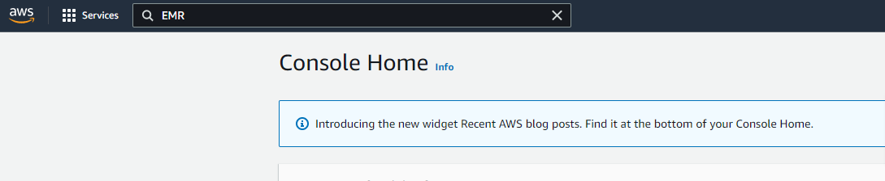
It will take you to the Amazon EMR page with the clusters link highlighted. Spend a minute on the “How Elastic Map Reduce Works” section, this should now appear familiar. Click on the Create Cluster button. This will launch the cluster creation page. 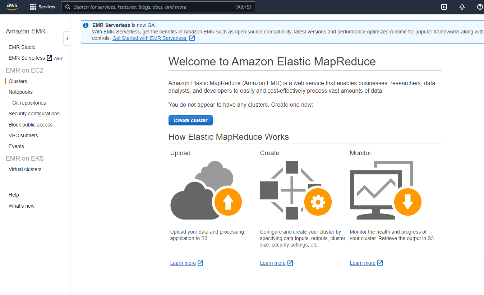
This quick start page contains a bunch of commonly used defaults. Notice that there is a link for Go to advanced options. 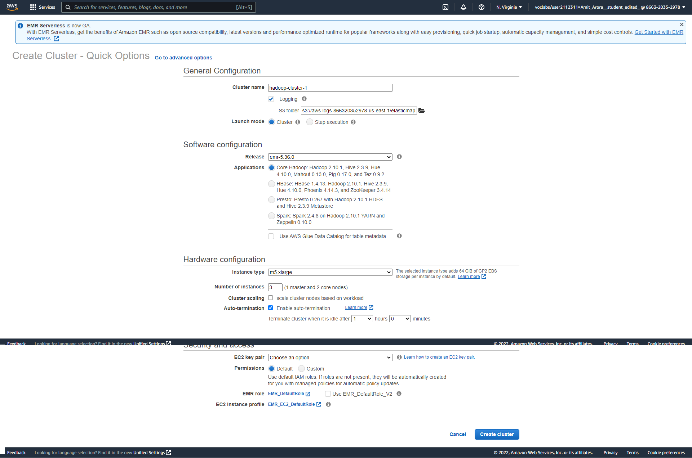
What you see on the page is a quick start option, click on the Go to advanced options link. 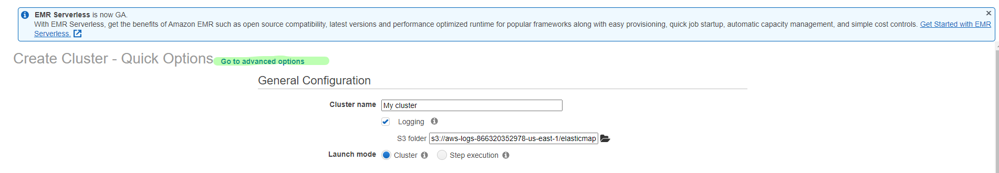
Now you will be guided through a sequence of steps where you will have access to all cluster configuration options and customizations. Starting with Software Configuration.
Select EMR Release 6.1.0 from the drop down. The default boxes that are checked are good enough. Notice that these selections include Spark as well that we shall be using throughout this course. For more details on all the software packages available see the EMR release guide. Under Edit software settings select Load JSON from S3 and copy paste
s3://bigdatateaching/bootstrap/cluster-config.json. This is for configuring Spark, while we do not need Spark in this lab but this will come in handy when creating EMR Clusters for running Spark jobs in future labs and assignments. For an explanation of these settings, please see this link from AWS documentation. 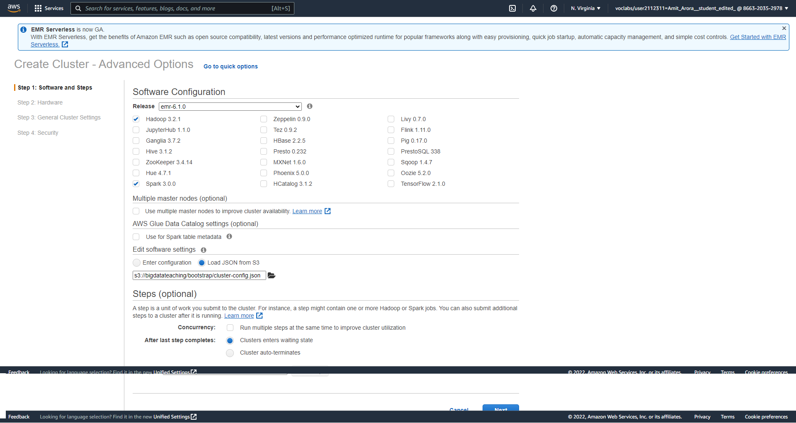Now on this page leave all options configured as defaults. Make sure that the Auto-termination checkbox is checked, as the name suggests, this will auto-terminate your cluster when it has not been in use for an hour. Click Next. 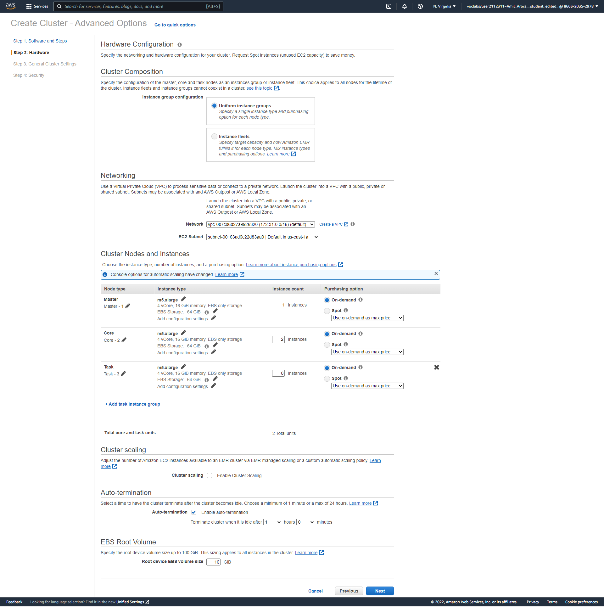
Provide a name for this cluster, you can call it hadoop-cluster-1. In the Bootstrap Actions section select a bootstrap action as custom action and provide this S3 path
s3://bigdatateaching/bootstrap/bigdata-bootstrap_emr6.shfor the custom boostrapt script. Click Next. 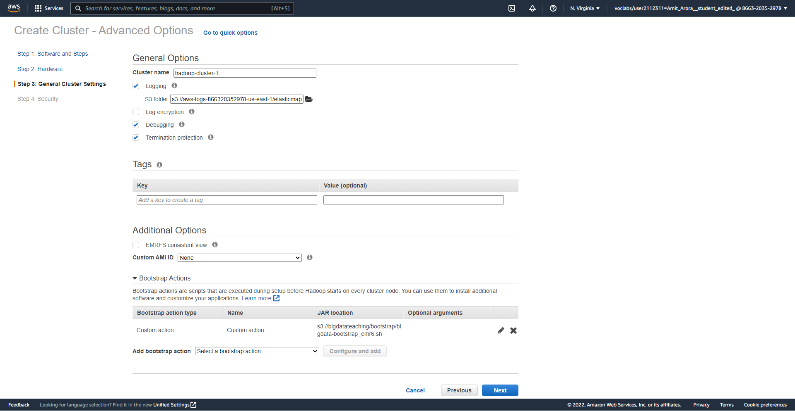Next on the Security Options page leave all settings as is except selecting the same key pair that you created in lab 1. This is essential to be able to login into the cluster. From the drop down for EC2 key pair choose a key pair that you created in lab 1. 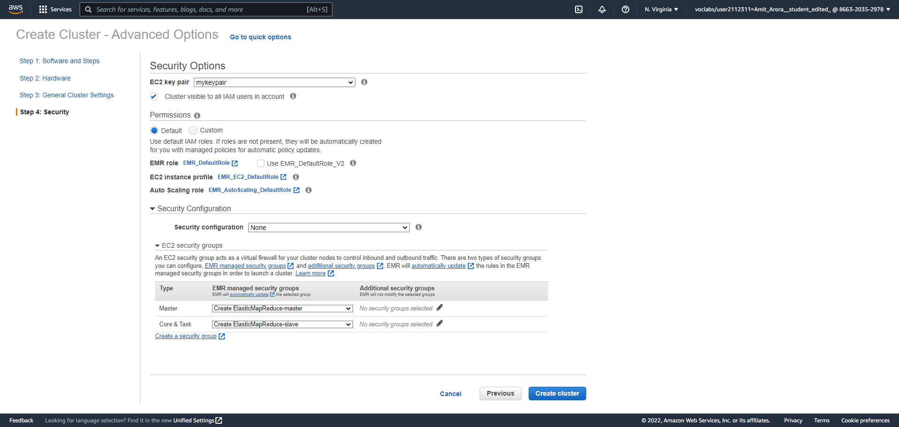
Press the Create cluster button. This will start the cluster creation process. 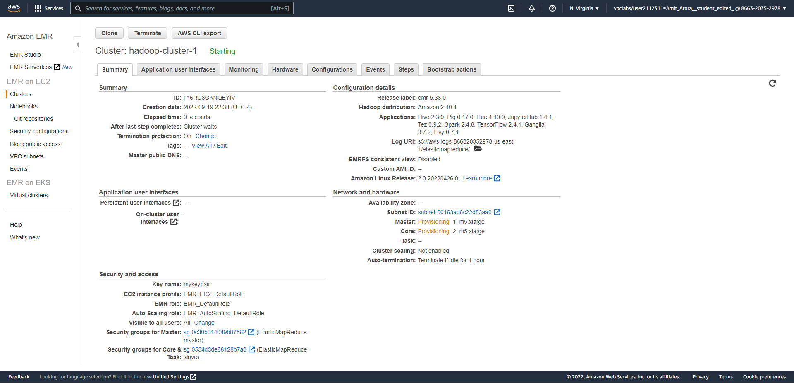
The cluster creation will take anywhere between 15 to 25 minutes to complete. The cluster status should be Starting to begin with. It may so happen that the your cluster may get Terminated because the m5 instance is not available in the availability zone (AZ) that is automatically selected (for e.g. us-east-1a, if this happens, press the Clone cluster button and this time change either the AZ or the instance type (to m3). 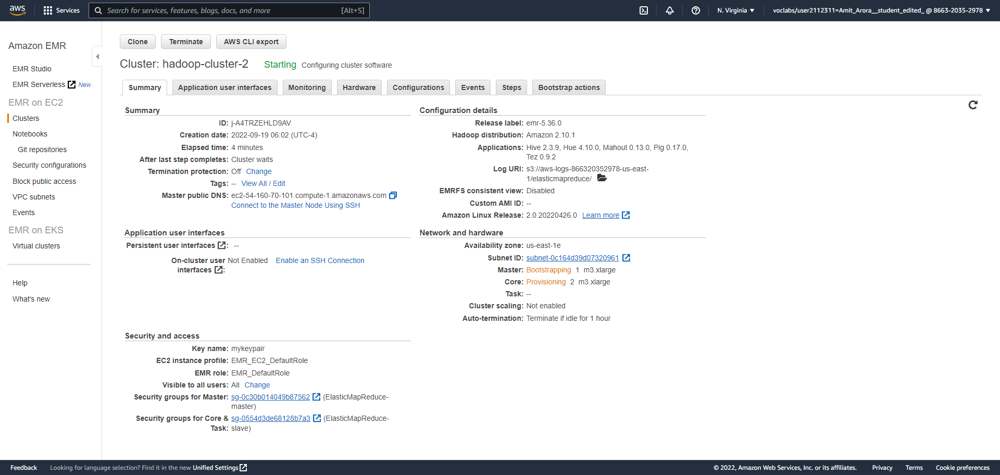
In a few minutes, the cluster status should change to Running and then to Bootstrapping. 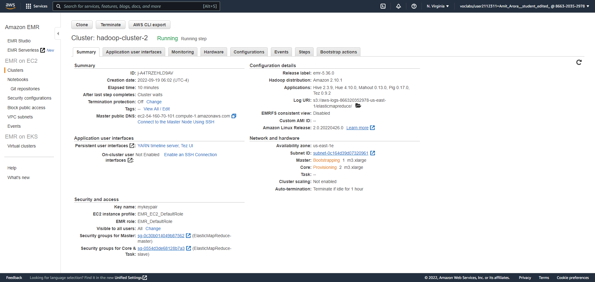 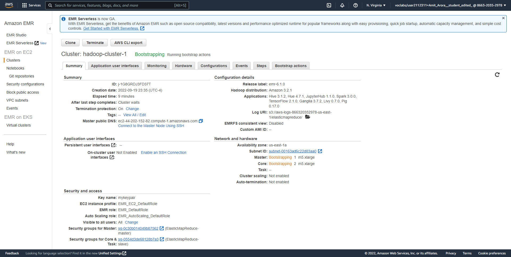
Finally, the cluster status should change to Waiting, cluster ready. The Waiting here refers to the cluster waiting for you to assign it a task to do. 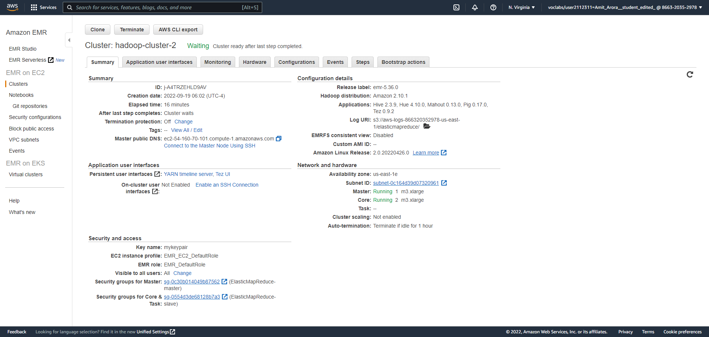
You should see the same status for the cluster on the Clusters page. 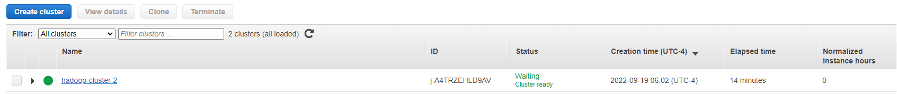
Click on the Hardware tab and you should be able to see the master node and the two core nodes. 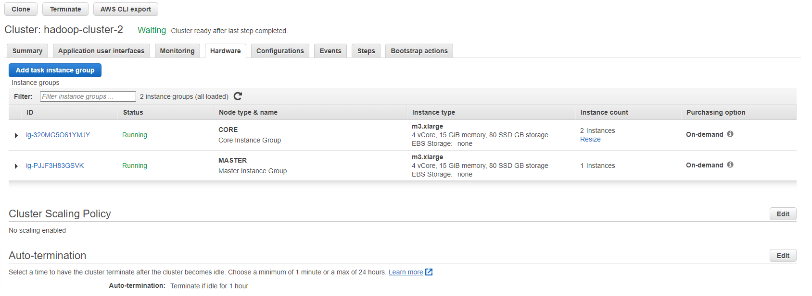
Now we are ready to SSH into the cluster. By SSH into the cluster, we mean SSH into the Master (also called Driver) node of the cluster. Copy paste the Master public DNS and SSH into it from your laptop like you would to a regular EC2 VM, with one difference, the username is hadoop. This was the command for my cluster.
# the DNS name of the master node in the command below would # be different for you. ssh hadoop@ec2-35-175-104-71.compute-1.amazonaws.com
{kind=link}
{kind=link}
{kind=link}
{kind=link}
{kind=link}
{kind=link}
{kind=link}
{kind=link}
{kind=link}
{kind=link}
{kind=link}
{kind=link}
{kind=link}
{kind=link}
{kind=link}
You are not able to SSH into the master node because the Security Group associated with the master node does not allow SSH from the Internet.
Edit the security group to add a rule to all SSH (TCP port 22) from anywhere on the Internet (0.0.0.0/0)
{kind=link}
{kind=link}
Once you are able to SSH you should see a Terminal like this. 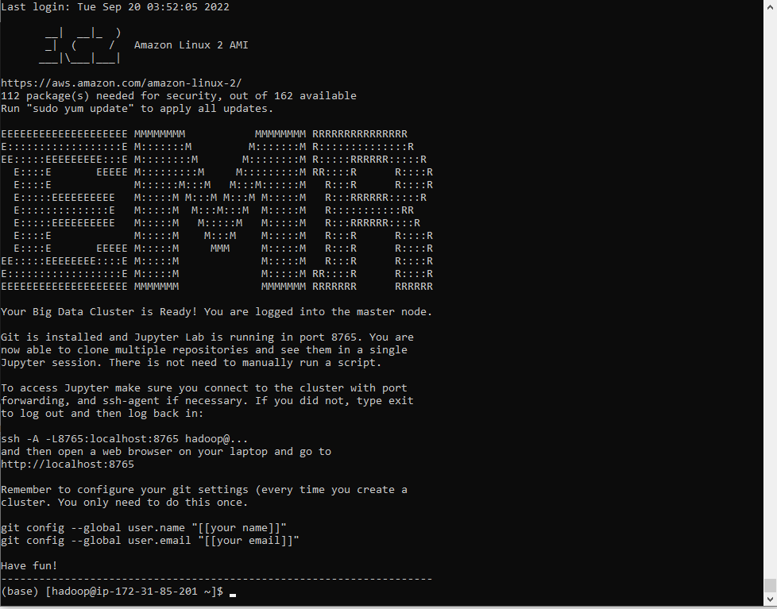
To Terminate the cluster select the cluster you want to terminate on the Clusters page and click on the Terminate button. There is no option to stop a cluster.
Finally, everything that we did to create this cluster can be accomplished via the CLI. Click on the AWS CLI Export and it would open a pop-up dialog box as shown in the screenshot below. You could copy paste this CLI command in a bash script and run the bash script the next time you need to create a cluster. You can use Cloud9 to run this command/script. 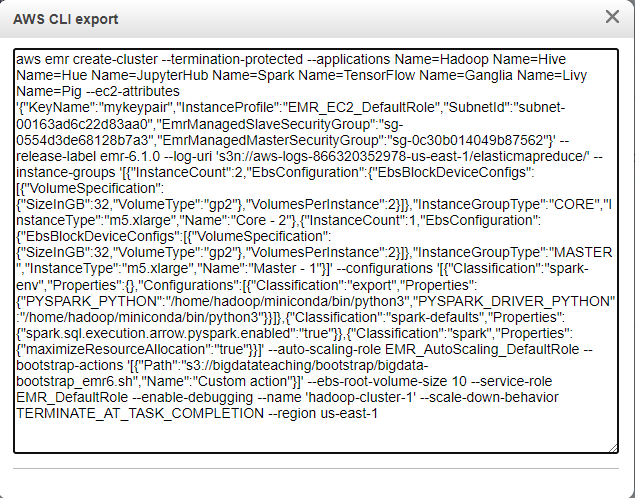
{kind=link}
{kind=link}